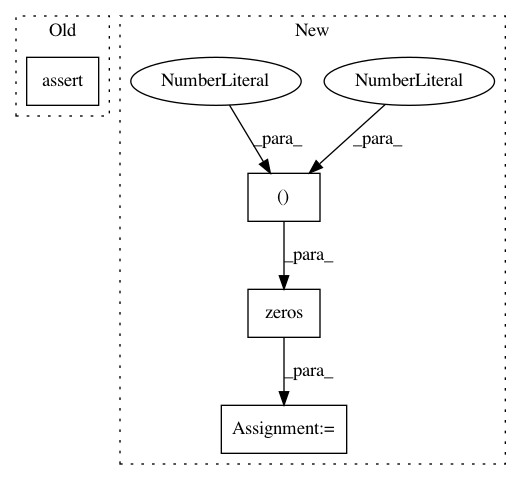

3d9d0b79be01a00d9cc055e40d5b1b8bb6067292,nilearn/tests/test_masking.py,,test_compute_gray_matter_mask,#,100
Before Change
def test_compute_gray_matter_mask():
assert_true(1)
def test_apply_mask():
Test smoothing of timeseries extraction
After Change
image = Nifti1Image(np.ones((9, 9, 9)), np.eye(4))
mask = compute_gray_matter_mask(image, threshold=0)
mask1 = np.zeros((9, 9, 9))
mask1[2:-2, 2:-2, 2:-2] = 1
np.testing.assert_array_equal(mask1, mask.get_data())
In pattern: SUPERPATTERN
Frequency: 4
Non-data size: 4
Instances
Project Name: nilearn/nilearn
Commit Name: 3d9d0b79be01a00d9cc055e40d5b1b8bb6067292
Time: 2018-07-11
Author: sylvain.lannuzel@student.ecp.fr
File Name: nilearn/tests/test_masking.py
Class Name:
Method Name: test_compute_gray_matter_mask
Project Name: apache/incubator-mxnet
Commit Name: 9ccc53dd27f213e52e4d088319b194520ebceb79
Time: 2020-12-15
Author: zhaoqizhu96@gmail.com
File Name: tests/nightly/test_np_large_array.py
Class Name:
Method Name: test_batch_dot
Project Name: scikit-learn-contrib/DESlib
Commit Name: 233aee75cc11cf64123774382953fbc0ceb78e87
Time: 2018-03-28
Author: rafaelmenelau@gmail.com
File Name: deslib/tests/des/test_knop.py
Class Name:
Method Name: test_weights_zero
Project Name: scikit-learn-contrib/DESlib
Commit Name: 233aee75cc11cf64123774382953fbc0ceb78e87
Time: 2018-03-28
Author: rafaelmenelau@gmail.com
File Name: deslib/tests/des/test_knorau.py
Class Name:
Method Name: test_weights_zero